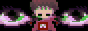

witchdagger
/ Github / Steam Workshop / dingus.pl / Mastodon /
hello, welcome to my website!
i do stuff with computers and music
im a huge half life nerd, and i listen to more geeky rock like weezer
if youre interested in following my work or contacting me, check out my mastodon

The background comes from the game Half-Life made by Valve Software and remains it property
Fonts used are Shrikhand and Ubuntu Mono